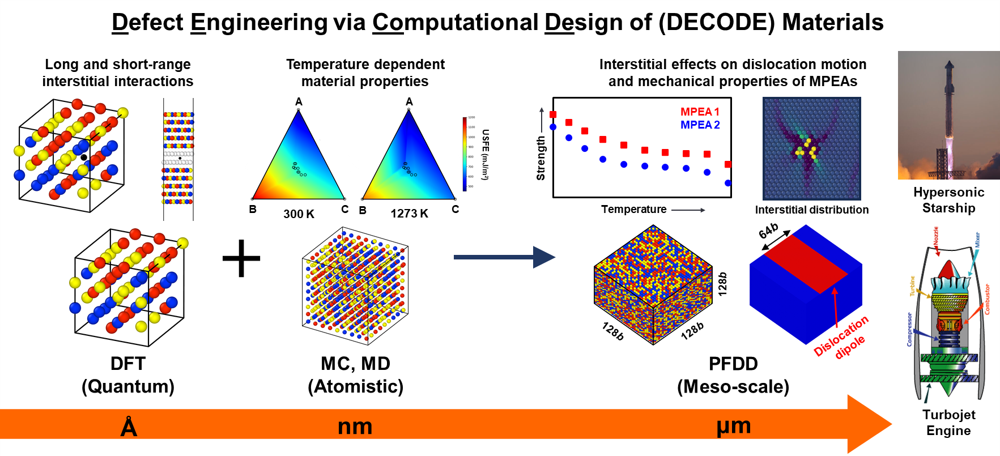
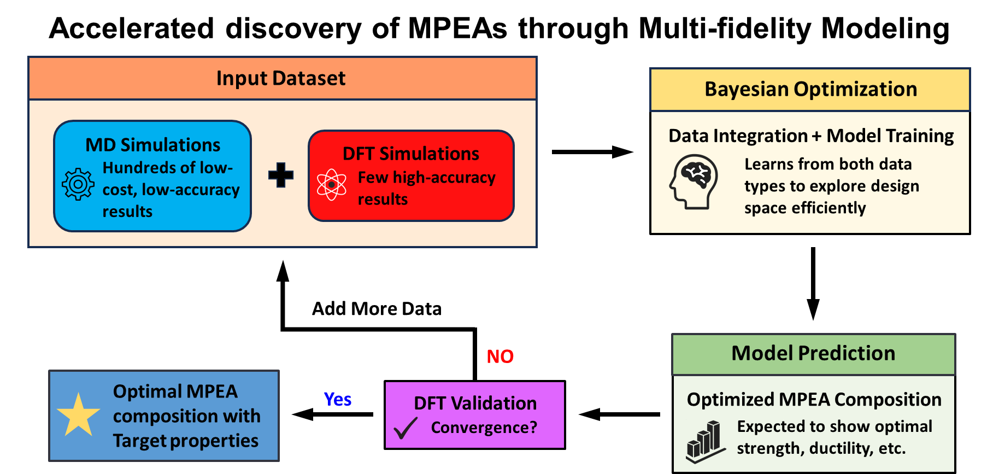
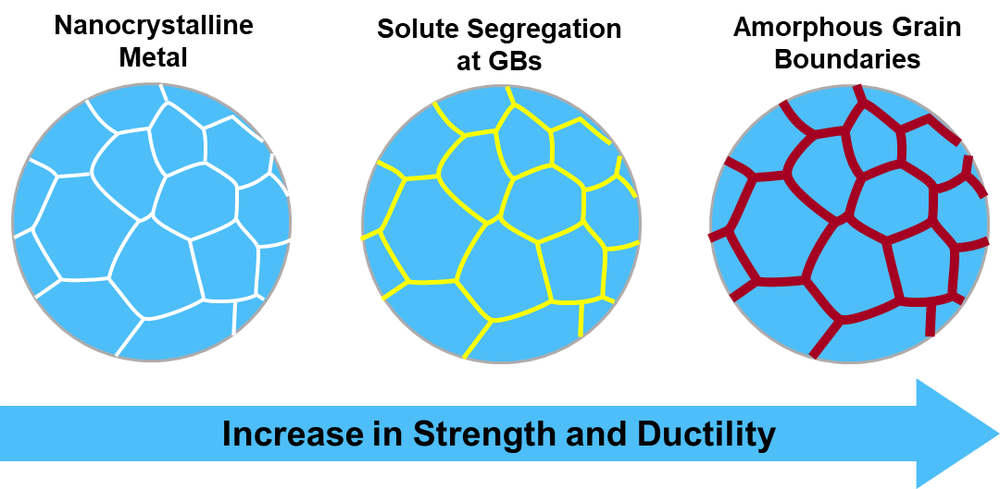

The DECODE Materials Lab pursues three interrelated research thrusts centered on defect-informed computational design of advanced materials.
Our research spans quantum to continuum length scales, enabling a comprehensive mechanistic understanding of material behavior from individual atoms to engineering components. We integrate and extend these methods to tackle problems at the forefront of materials science.
We employ DFT + MD + PFDD to reveal how interstitial impurities (O, H, C) and chemical disorder govern temperature-dependent dislocation dynamics in refractory MPEAs:enabling design of alloys for aerospace, hypersonic, and nuclear energy applications.
Applications: Aerospace · Hypersonic vehicles · Nuclear energy · Quantum technologies · Energy storage

MPEAs offer exceptional combinations of thermal stability, mechanical performance, and functional properties inaccessible to conventional alloys. We develop a multi-fidelity Bayesian optimization framework combining large, low-cost MD datasets with high-accuracy DFT calculations to efficiently navigate the vast compositional landscape and predict new alloys with tailored properties.

Nanocrystalline metals offer superior strength but suffer from thermal instability driven by high-energy grain boundaries. We use hybrid Monte Carlo / MD simulations to investigate how multiple solutes (Zr, Ta, Ag, Nb) co-segregate to boundaries and induce amorphous grain boundary complexion transitions that simultaneously enhance strength, ductility, and chemical stability.
This work provides design rules for thermally stable nanocrystalline alloys capable of retaining exceptional properties under extreme mechanical and thermal conditions.
